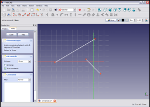

|
| Umístění Menu |
|---|
| Sketch → Sketcher constraints → Constrain distance |
| Pracovní stoly |
| Sketcher, PartDesign |
| Výchozí zástupce |
| Nikdo |
| Viz také |
| Constraint HorizontalDistance, Constraint VerticalDistance |
Contents |
Popis
Vazba Délka nastavuje délku přímky, kolmou vzdálenost mezi bodem a přímkou nebo vzdálenost mezi dvěma body.
Rada
Pokud uvažujete o její aplikaci, zamyslete se raději nad použitím vazeb Horizontální vzdálenost nebo vertikální vzdálenost. Tyto vazby jsou robustnější a mají rychlejší výpočet než zde popisovaná vazba Délka.
Postup
Vyberte přímku na náčrtu,

kliknutím na ni (změní se na tmavězelenou).

Aplikujte vazbu Délka výběrem ikony  z nástrojového pruhu vazeb náčrtu nebo výběrem položky Vazba Délka v submenu vazby náčrtu v menu Náčrt pracovní plochy Náčrt (nebo Návrh dílu v pracovní ploše Návrh dílu).
z nástrojového pruhu vazeb náčrtu nebo výběrem položky Vazba Délka v submenu vazby náčrtu v menu Náčrt pracovní plochy Náčrt (nebo Návrh dílu v pracovní ploše Návrh dílu).

Délka přímky je nastavena na její aktuální délku. Dvojklik na vazbu v 3D pohledu nebo v záložce Tasks rozbalovacího pohledu vyvoláte dialogové okno, které umožňuje zadanou hodnotu upravit.

Zadáním požadované hodnoty a kliknutím na OK se nastaví délka.

Vazba Délka také upravuje vzdálenost mezi přímkou a bodem.

Vyberte přímku a bod na náčrtu,

potom aplikujte vazbu jako předtím.
Kolmá vzdálenost mezi bode a přímkou je nastavena na její aktuální hodnotu. Ta může být editována stejně jak bylo popsáno prve a nastavena tak na požadovanou hodnotu.

Vazba může být aplikována i na dva koncové body lomené čáry.

Aplikováním vazby stejně jako předtím je určena vzdálenost mezi vybranými body. Jak je popsáno váše, i zde může být hodnota upravena na požadovanou velikost.

{kind=link}